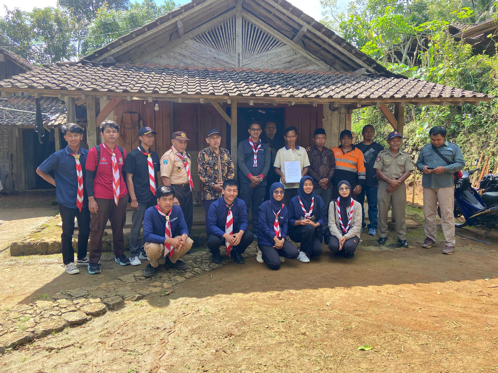

Tanggal: 12 Juni 2025
Pada hari Kamis, 12 Juni 2025, telah dilaksanakan kegiatan survei pemugaran Rumah Tidak Layak Huni (RTL) oleh Tim dari Kwartir Daerah Gerakan Pramuka Jawa Timur bekerja sama dengan Kwartir Cabang Gerakan Pramuka Trenggalek. Survei ini dilakukan di beberapa titik wilayah Kecamatan Pule yang menjadi usulan prioritas program bakti masyarakat.
Kegiatan ini bertujuan untuk meninjau langsung kondisi RTL yang akan menjadi sasaran program pemugaran sebagai bagian dari pengabdian masyarakat Gerakan Pramuka. Tim survei didampingi oleh perwakilan dari Kwartir Cabang dan kwartir ranting setempat.
Kegiatan berlangsung dengan lancar dan penuh semangat gotong royong. Warga setempat turut menyambut dengan antusias serta memberikan informasi dan dukungan penuh terhadap rencana pemugaran RTL.
Hasil dari survei ini akan menjadi dasar penyusunan program RTL oleh Kwartir Daerah Jawa Timur, dengan harapan dapat memberikan dampak nyata bagi masyarakat dan menunjukkan peran aktif Pramuka dalam pembangunan sosial.
« Kembali ke Berita